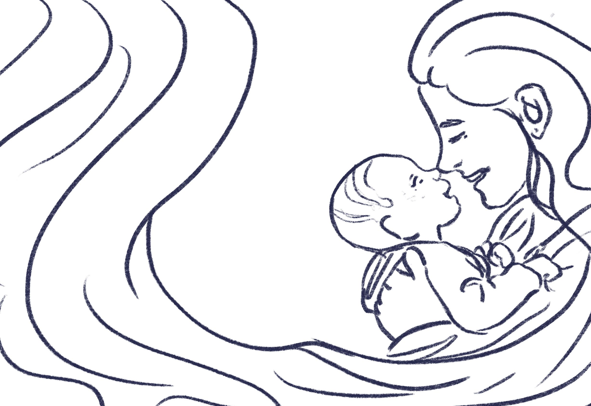
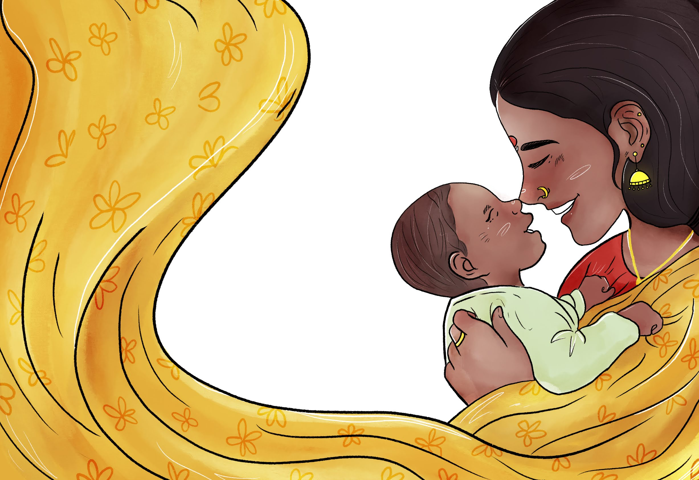

Women's Health
An illustrated booklet made for the Tamil Nadu Government on the
care of pregnant women with vital health information, designed to
be readable at a glance and easy to hand out at a clinic.
Year2021
RoleIllustrator & Designer
ClientTamil Nadu Government
MediumProcreate · InDesign
FormatPrinted booklet
i.
The brief
A booklet for the Tamil Nadu Government covering pregnancy care like nutrition, warning signs, antenatal visits, the common concerns. Written and illustrated to be handed out at public clinics. The information is vital, and the audience is pregnant women.
★
ii.
The process
Working out what each page had to say. These went through several rounds of back and forth with the clients before being finalised, inked, and coloured.


Roughs
Final
★
iii.
Booklet


1 / 22
Credits
Client
Tamil Nadu Government
Public-health distribution at clinics.
Tools
Procreate
InDesign · Photoshop
Format
Printed booklet